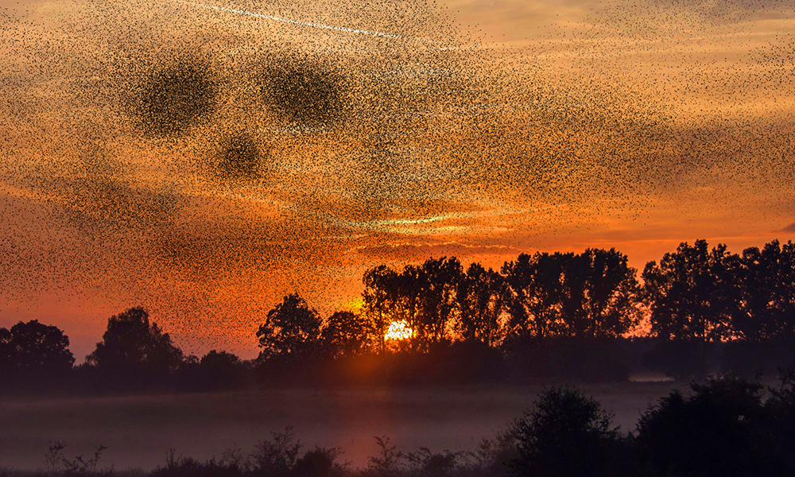
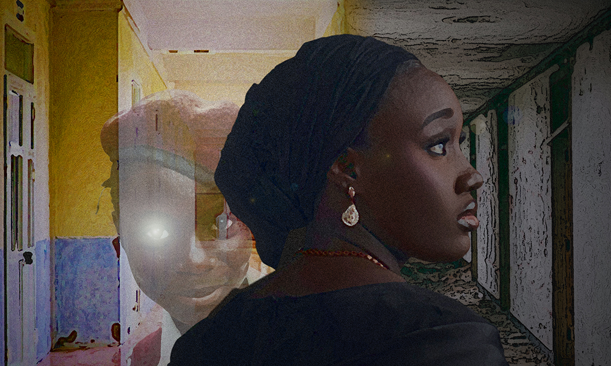
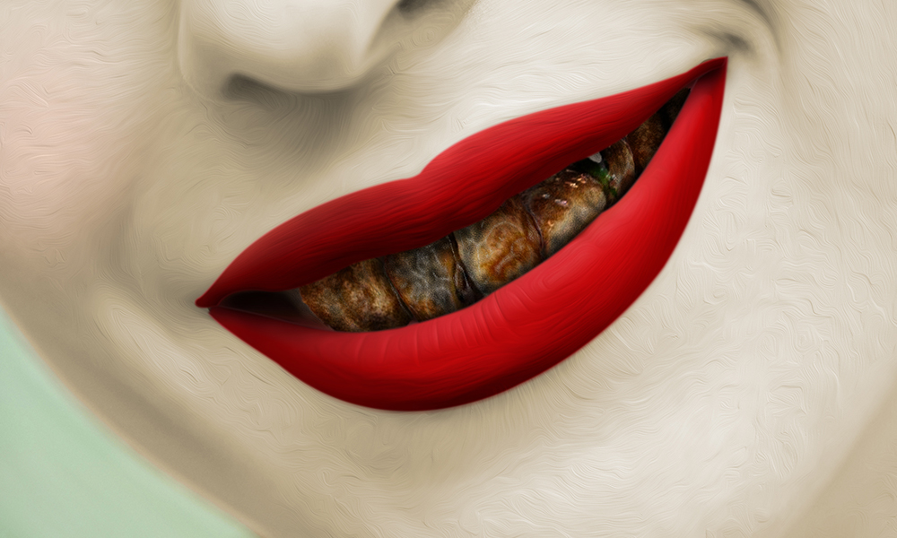
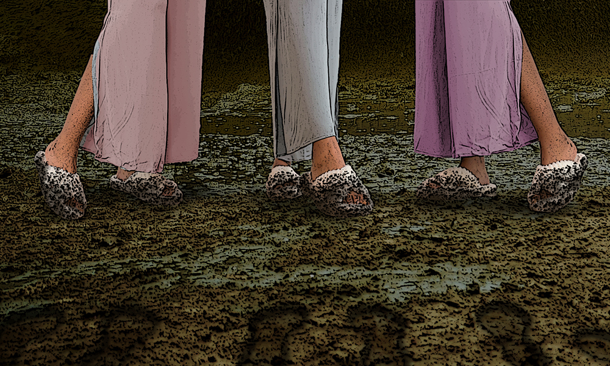

This is Emma Burnett's third contribution to our pages, each more weighty than the one before. Here she tackles timely and challenging subject matter: how the suffering our forbearers endured goes on to affect those who follow them, forging links in a chain that seems inevitably to bind us to more pain in the future. Here's to breaking that chain. Editorial note: although Mythaxis doesn't use trigger warnings, readers may appreciate knowing that this story makes reference to the legacy of historical attrocities including the Holocaust.

Horror can find great potency against the context of the ordinary, but the everyday world can also be extraordinary, like the hypnotically flowing aerial dances which flocking birds take part in. A.M. Sutter looks to this phenomena and sees something in the patterns… but not something good.
There's intergenerational trauma, and there's interpersonal trauma as well. Anna Koltes's story manifests the agony of relationships right there in the flesh, the kind of metaphor you feel like a missing limb. Doesn't you find it seems like you just give and give and give, while others only take?

Olufunmilayo Makinde provides us with a classic: the good old-fashioned ghost story. Adjacent to a recurring theme in this issue, here we again see someone dealing with trauma from the past, this time which has its roots in that person's own actions. Would they, could they, do things differently?

There's nothing better than a good fairy tale – unless it's a wince-inducing horror story wearing the skin of one! Christina Ladd serves up a sweet-toothed delight for those with a taste for the macabre. Hard to say whether or not it will leave you hungry for more…

As an appropriate bookend to this issue's fiction offering we return to the theme we opened with, of how trauma can travel across generations. Siobhan Ekeh's story looks in a different direction and recounts what it sees in a different style, a strangely magical encounter with the past that affects those who remember it and those who don't in distinct but equally powerful ways.
Back with his second article of the year, all-too-human Mattia Ravasi takes a close look at one of those infinitely strange and wonderful things that only seem commonplace to us because they are so familiar… I'm referring, of course, to books, in this case Marie-Helene Bertino's 'Beautyland'. What will we glean from his musings, and why are we so keen to know more?
As always, we round out the issue with a selection of interesting speculative fiction from around the web, as always with an eye on those zines that may have slipped under your reading radar…